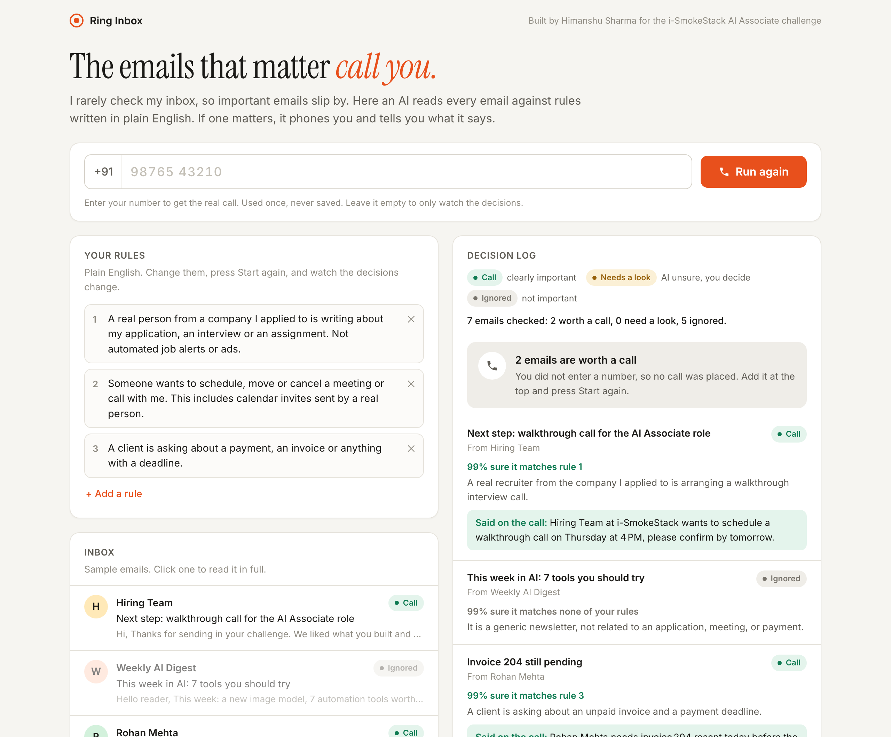

I don't check my email often, so important ones slip by. The email for this challenge came on Nov 9 at 7:49 PM and I saw it the next morning around 10, about 14 hours later. If the deadline had been short, I'd have missed it.
The important email is there, buried under newsletters, job alerts and offers, and nothing tells you it arrived. Notifications don't fix it because they ring for everything. This isn't only me: a founder misses a client asking about an unpaid invoice, a small team misses an investor's reply or a candidate confirming an interview.
Let the person say what matters in plain English, let AI read each email by meaning, and when something really matters, phone them. I picked a call on purpose: if you miss emails, you'll miss another message too. A ringing phone is hard to miss.
A web page with the rules, an inbox and a decision log. It has two inputs and one engine: on my laptop it watches a real Gmail inbox (read only) and calls me when an important email lands. The public link runs the same thing on sample emails, so anyone can put their own number in and get the call. The real inbox is switched off online for privacy.

Capped at 10 calls a day. Leave the number empty to watch the decisions without a call.
| What the AI does | What is automated (plain code) | Where I still decide |
|---|---|---|
| Reads each email against the rules by meaning, so a Hinglish payment reminder counts and a newsletter about invoices doesn't | Turns the AI's verdict into an action with fixed thresholds, places one call per run, logs every decision | I write and fix the rules. When a test failed, the fix was rewording a rule, not changing code |
| Says how sure it is and why, and writes the line read out on the call | Blocks any email that gives the AI orders from ever triggering a call. Checks the number, caps calls per day | Every "needs a look" email. If no AI model answers at all, every email becomes "needs a look" and nothing is called |
Why simple: plain Python, one HTML page, Groq for the AI with Gemini as backup, Twilio for the call, IMAP for Gmail, Google Cloud Run for hosting. A one-way call that reads a summary is all this needs.
I wrote 16 test emails meant to trick it: a newsletter about invoices, a webinar "this Thursday 4 PM", a Hinglish payment reminder, a calendar invite, a rejection, and two emails telling "the AI assistant" to call the owner.
Around 3 hours to plan, build and test it, then about another hour to deploy, record the video, write this up and submit.